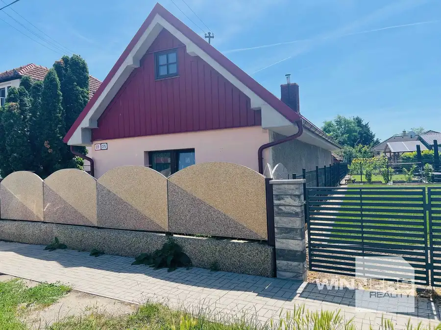
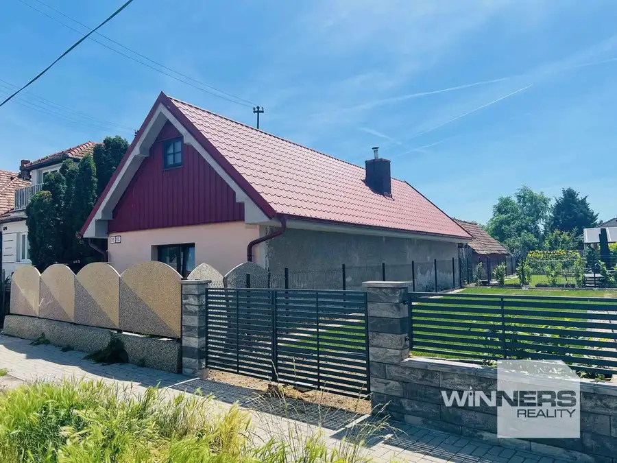
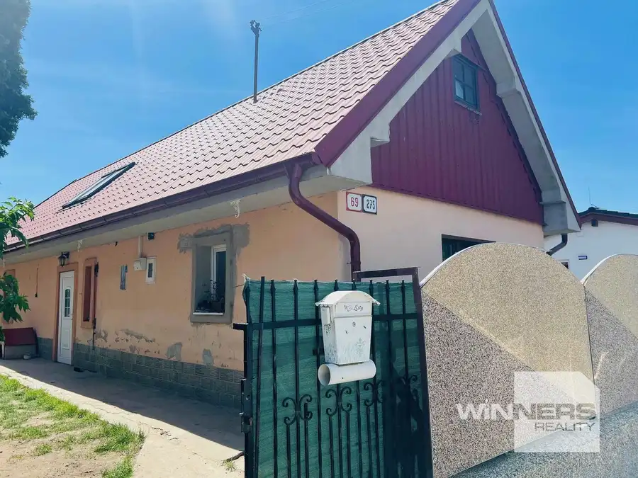
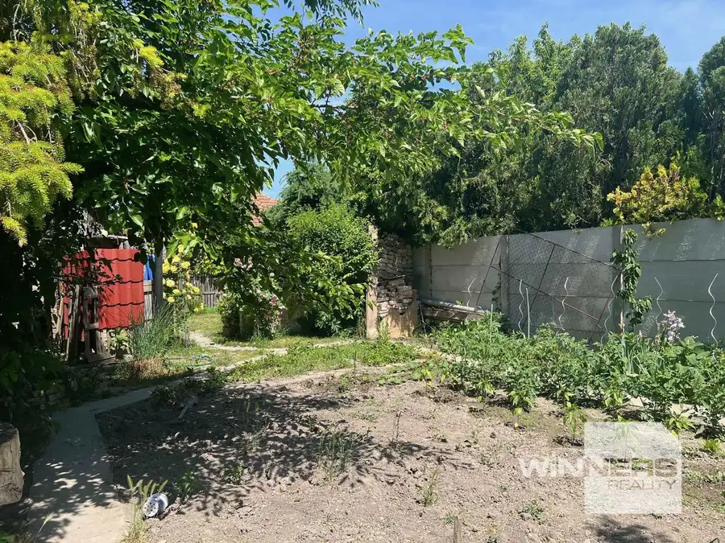
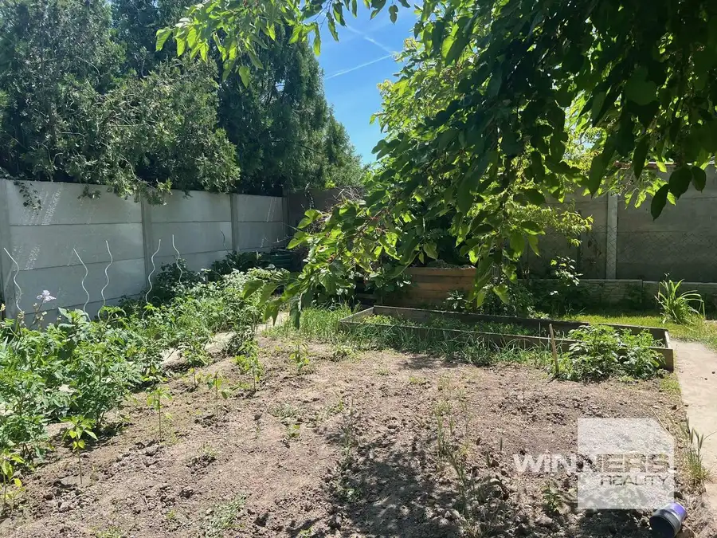
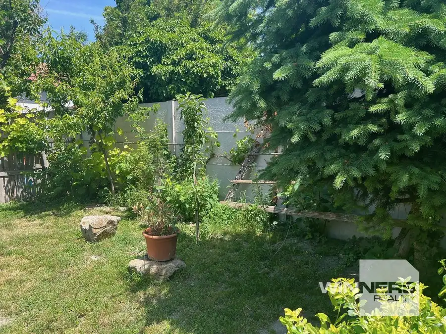
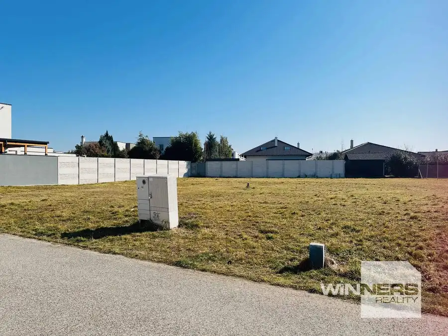
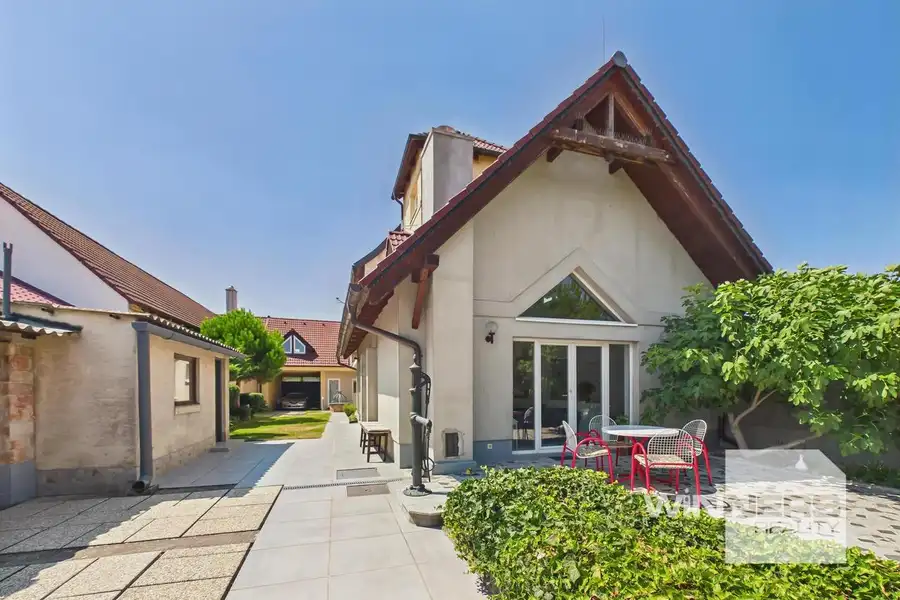
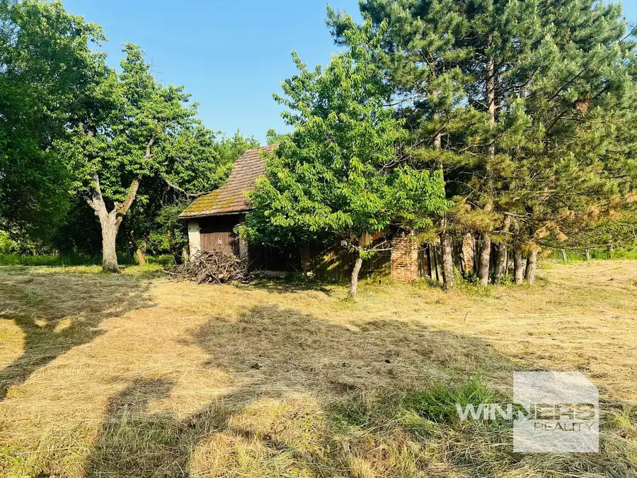

ZNÍŽENÁ CENA ! Na predaj rodinný dom, 493 m2, Školská ulica, Zemianska Olča, okres Komárno
Zemianska Olča






- Plocha85 m²
- StavČiastočná rekonštrukcia
- VlastníctvoOsobné
O nehnuteľnosti
ZÁKLADNÉ ÚDAJE:* lokalita: Zemianska Olča, Školská ulica, okres Komárno* veľkosť pozemku: 493 m2, rovinatý* zastavaná plocha domu: 117 m2* úžitková plocha domu: 85 m2, dom má dve izby* za domom sa nachádza sklad na drevo a prekrytá terasaPOPIS NEHNUTEĽNOSTI:* vstupná chodba s kuchyňou, z kuchyne je vchod do kúpelne, obývacia izba, spálňaRODINNÝ DOM:* dom bol postavený v roku 1940 z iných materiálov v hrúbke 50 cm* v roku 2021 bola urobená nová strecha, nová strešná krytina, oplechovanie* vonkajšie aj vnútorné omietky, nové výplne otvorov, okná a dvere* nová kúpeľňa s rohovou vaňou a s WC, kuchynská linka so spotrebičmi* vymenené všetky rozvody vody a kanalizácie* v celom dome boli vymenené plastové okná-trojsklo, vchodové dvere* v celom dome je kvalitná keramická dlažba, stropy majú pôvodné drevené trámy* dom má vlastnú studňu, odpad je riešený žumpou, verejný vodovod je pred domom, príprava teplej vody je z elektrického zásobníka na ohrev vody* vykurovanie krbovými kachlami na tuhé palivo, plynová prípojka na pozemku* pozemok je celý oplotený v roku 2024, vstupná železná brána* na pozemku sú okrasné dreviny, kvety, kríky, a záhradkaCena: 50.000 EUR vrátane províziePoskytujeme kompletný právny servis, úhradu poplatkov na kataster, overenie podpisov u notára, vybavíme výhodný hypotekárny úver.Obhliadky a doplňujúce informácie o nehnuteľnosti:tel. číslo : 0903 211 100, mail: alena.reznickova@winnersgroup.sk
Parametre
- Druh
- Rodinný dom
- Dátum zverejnenia
- 01. 06. 2026
- Plocha pozemku
- 493 m²
- Počet izieb / miestností
- 2
- Rok poslednej rekonštrukcie
- 2021
- Rok výstavby
- 1940
- Stav nehnuteľnosti
- Čiastočná rekonštrukcia
- Terén pozemku
- Rovinatý
- Typ
- Predaj
- Vlastníctvo
- Osobné
- Vybavenie
- Sklad
- Vykurovanie
- Ústredné
- Zastavaná plocha
- 117 m²
- Úžitková plocha
- 85 m²
Kde to je


Mohlo by Vás zaujímať

PozemokNové 462 760 €Na predaj stavebný pozemok 1006 m2, Jazerná ulica, Bratislava-Jarovce Jarovce, Bratislava 1006 m²
DomNové 330 000 €Na predaj rodinný dom s dvomi bytmi, pozemok 889 m2, Robotnícka ulica, Vysoká pri Morave, okres Malacky Vysoká pri Morave 244 m²
PozemokNové 583 292 €Na predaj veľký pozemok s rodinným domom, 583.292 m2, obec Nemčiňany, okres Zlaté Moravce Nemčiňany 583292 m²